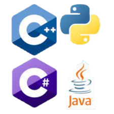
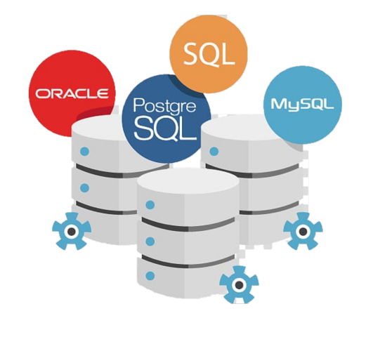

I'm Mega, a second-year Computer Science and Engineering student at VIT Chennai, specializing in Artificial Intelligence and Machine Learning. Beyond books, I'm on a tech journey. I explore new trends, join coding events and turn AI ideas into real projects. Imagine me building smart systems and exploring computer vision. Besides coding, I love playing chess, where I develop skills that go beyond the game into strategic thinking and decision-making. Each coding challenge feels like a step in my game of learning and growing. Welcome to my digital space, where tech meets strategy, and every code line tells a piece of my story.
I possess a diverse skill set, ranging from web development and programming languages to proficient database management, enabling me to approach projects with versatility and adaptability.
HTML, CSS, JavaScript

Python, C, C++, Java
MySQL, SQLPlus, Oracle
Dive into the heart of my creative endeavors. The Projects section showcases a collection of initiatives that I have undertaken. Each project is a story, a problem solved, a lesson learned.
The Parking Management System project transforms parking with FASTag technology, providing real-time space updates and automating entry, exit, and fee calculations. This user-friendly system monitors parking duration for fair pricing and emphasizes scalability for future enhancements and data-driven decisions. Focused on security and user satisfaction, the project aims to streamline parking operations, promote eco-friendliness, and enhance customer convenience.
The Home Security System project aims to create a strong and easy-to-use security solution for homes, utilizing the Arduino Mega platform. We aim to incorporate advanced technology, including fingerprint biometric authentication and OTP verification, to establish a multi-layered security system. The system ensures secure entry with precise fingerprint recognition, displaying a clear "Access Granted" message upon success. In case of errors, a responsive OTP entry process is initiated through a keypad. With dynamic OTP generation via the GSM module and a lockout mechanism for repeated errors, the system emphasizes homeowner awareness by sending instant notifications. This comprehensive approach ensures protection and peace of mind for homeowners.
Project LinkThis Python project introduces a sophisticated System Resource Monitor and Manager using Tkinter GUI toolkit, aiming to provide users with real-time tracking of critical system metrics, focusing on CPU and memory utilization. Leveraging the psutil library for comprehensive system and process data, the user-friendly interface, constructed with Tkinter, enables interactive exploration. Key features include dynamic retrieval of process information, effective handling of exceptions, and an innovative categorization of processes based on memory usage. The project dynamically refreshes displayed information, offering real-time insights into CPU and memory usage, categorizing top processes by memory usage for streamlined identification of resource-intensive elements. In conclusion, this enhanced System Resource Monitor not only provides a comprehensive overview of system performance but actively assists in identifying and freeing up resources, offering a powerful solution for effective system resource management through Python's data processing capabilities, Tkinter's intuitive design, and psutil's robust information retrieval.
Project LinkEducation is the foundation upon which my journey is built. This section outlines my academic pursuits, highlighting the institutions I've been a part of and the knowledge I've gained.
Degree: B.Tech Computer Science and Engineering with specialization in Artificial Intelligence and Machine Learning
CGPA: 9.42
Year: 2022 - 2026
Degree: High School (Grades 7-12)
Year: 2016 - 2022
Degree: Elementary School (Grades 1-6)
Year: 2008 - 2016